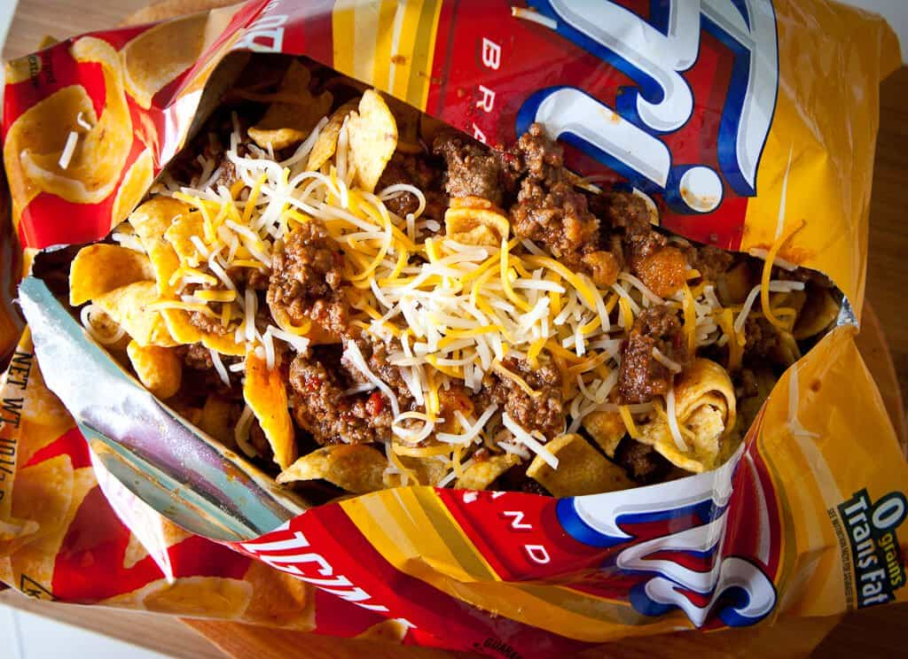

Frito Pie

Description
Frito pie is a quick dish anyone can make quick. I do the method that is fast, and low effort so you can expect
for it to be made with cheaper less complex chili ingredients.
Ingredients
- Fritos
- Shredded cheese
- Homemade chili, or canned chili
- Any other condiments or veggies you want to add yourself
Steps
- First you want to get your chili cooked, or heated up. I use canned chili so I just have to open the can, and heat it up on the stove.
- Once you heat up your chili you are going to need to pour your fritos into a bowl.
- After that you are going to need to put your shredded cheese on top of it.
- Now pour your chili on top of the fritos and cheese then stir.
- Once your frito pie is all mixed up you can now eat it and enjoy!